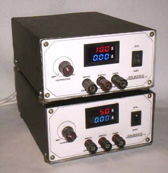
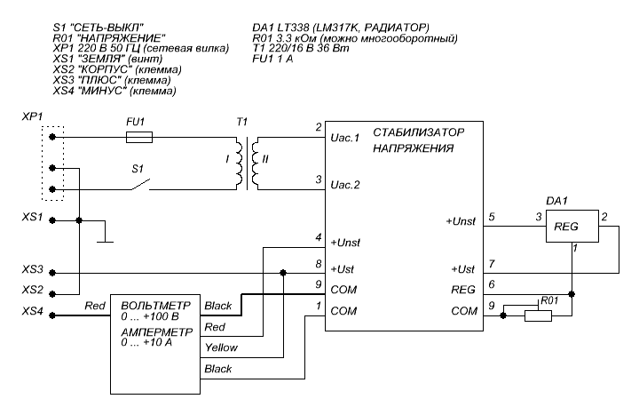
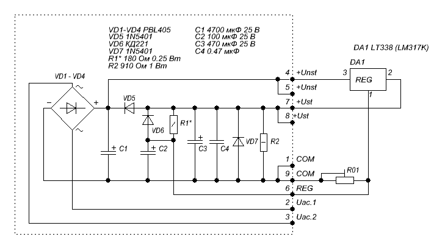
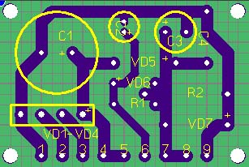
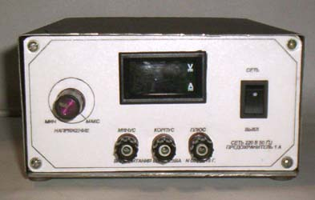
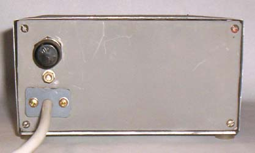
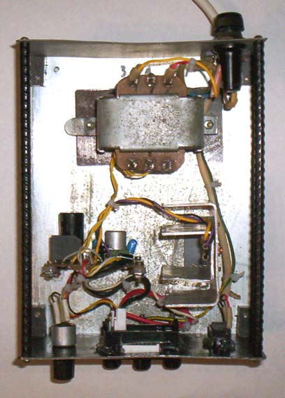
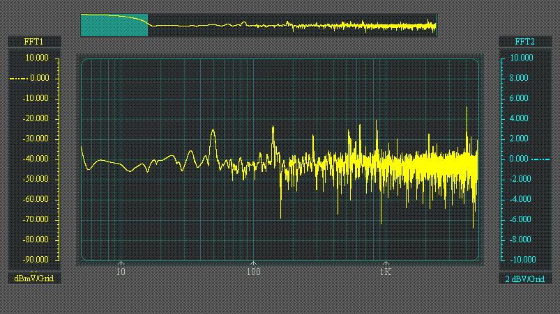
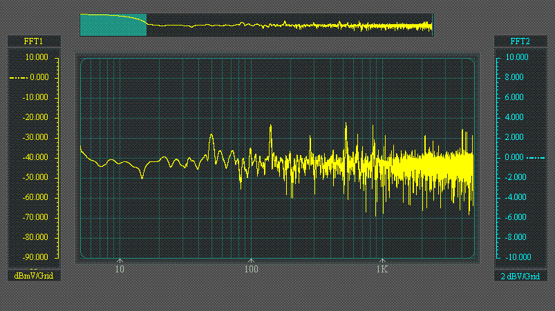

Линейный регулируемый блок питания с постоянным выходным напряжением +1.25 ... +19 В и выходным током до 1.5 А

Назначение
Линейный регулируемый блок питания с выходным постоянным напряжением в диапазоне +1.25 ... +19 В при выходном токе до 1.5 А разработан на основе упрощенных схемных решений более мощного блока питания с аналогичными параметрами [3] и предназначен для проведения исследовательских работ по электролизу, зарядки малогабаритных аккумуляторов, испытаний электромагнитных и магнитоэлектрических приводов [1, 2], а также при разработке электронных схем в качестве источника питания.
Технические данные:
Описание
Электрическая принципиальная схема блока питания показана на рис. 1. Прибор подключается к питающей сети напряжением 220 В частотой 50 Гц с помощью сетевой вилки с заземлением (XP1). Для дополнительного заземления корпуса прибора помимо контакта сетевой вилки служит клемма XS1, расположенная на задней панели. Первичная обмотка силового трансформатора T1 запитывается от сети переменного тока через предохранитель FU1 и тумблер S1 "СЕТЬ-ВЫКЛ". С вторичной обмотки трансформатора T1 напряжение поступает на линейный стабилизатор напряжения, схема которого приведена на рис. 2. Регулировка поступающего на клеммы XS3, XS4 передней панели выходного напряжения стабилизатора осуществляется с помощью переменного резистора R01 "НАПРЯЖЕНИЕ". Для контроля величины выходного напряжения и тока служит цифровой мультиметр (вольтметр 0 ... +100 В и амперметр 0 ... +10 А). Полярность выходного напряжения блока питания относительно корпуса может быть выбрана с помощью перемычки между клеммой XS2 "КОРПУС" и одной из клемм "МИНУС" (XS4) или "ПЛЮС" (XS3). При отсутствии такой перемычки гальваническая связь выхода блока питания с корпусом отсутствует.

Рис. 1. Схема электрическая принципиальная блока питания.
Стабилизатор напряжения, схема которого показана на рис. 2, построен на интегральном регулируемом линейном стабилизаторе DA1 (LT338, LM338, LM317K), обеспечивающим необходимый диапазон регулировок по выходному напряжению и защиту по выходному току при превышении рассеиваемой мощности или рабочей температуры. Переменное напряжение со вторичной обмотки II силового трансформатора T1 (рис. 1) поступает на диодный выпрямитель VD1-VD4 с фильтром C1. Выпрямленное и отфильтрованное напряжение подается на вход микросхемы стабилизатора DA1. Диапазон выходного напряжения определяется соотношением сопротивлений подключенного к регулирующему выводу микросхемы DA1 делителю (R01 - рис. 1 и R1 - рис. 2). Диоды VD5, VD6, VD7 выполняют функцию защиты микросхемы от обратного напряжения. Резистор R2 служит нагрузкой при нулевом токе потребления. Эскиз печатной платы стабилизатора напряжения показан на рис. 3. Микросхема линейного стабилизатора DA1 размещена на дюралюминиевом теплоотводе, который крепится к основанию корпуса прибора с помощью изолирующего уголка.

Рис. 2. Схема электрическая принципиальная стабилизатора напряжения.

Рис. 3. Печатная плата стабилизатора напряжения. Размеры платы 60 х 40 мм2.
Источник питания смонтирован в металлическом корпусе, который состоит из основания и прикрепленных к нему двух панелей - передней и задней, соединенных распорками. Сверху корпус закрывается П-образным кожухом. Большинство деталей и узлов установлено на основании или передней панели. Устройства подключения, управления и индикации выведены на переднюю и заднюю панель (рис. 4, 5). Вид на внутренний монтаж показан на рис. 6.

Рис. 4. Блок питания. Вид спереди.

Рис. 5. Блок питания. Вид сзади.

Рис. 6. Блок питания. Вид сверху со снятым кожухом.
На рис. 7, 8 показан спектр переменной составляющей на выходе блока питания при выходном напряжении +5 В без нагрузки и с нагрузкой в диапазоне частот 5 Гц ... 5 кГц.

Рис. 7. Спектр переменной составляющей выходного сигнала блока питания (выходное напряжение +5 В, нагрузка отсутствует).

Рис. 8. Спектр переменной составляющей выходного сигнала блока питания (выходное напряжение +5 В, сопротивление нагрузки примерно 4.7 Ом, выходной ток примерно 1 А).
Состояние разработки
Блок питания используется в лабораторных условиях при проведении различных экспериментов, в технологических целях, в частности, для электролитического осаждения покрытий и получения порошков, при налаживании и ремонте электронных устройств и зарядке аккумуляторов, когда требуется оперативный контроль напряжения и тока питания без подключения дополнительных приборов.
Ссылки:
25.04.2019
Альтернативные источники
энергии
Компьютеры и
Интернет
Магнитные поля
Механотронные системы
Перспективные
разработки
Электроника и технология